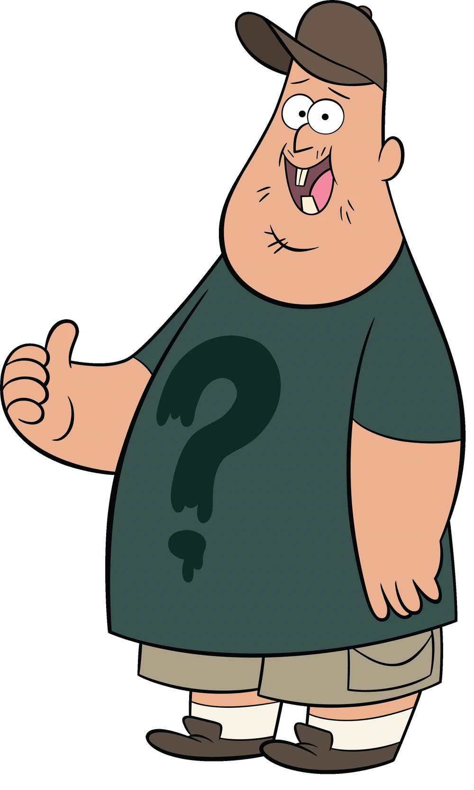
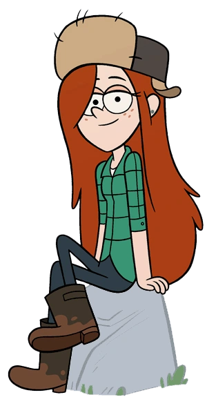
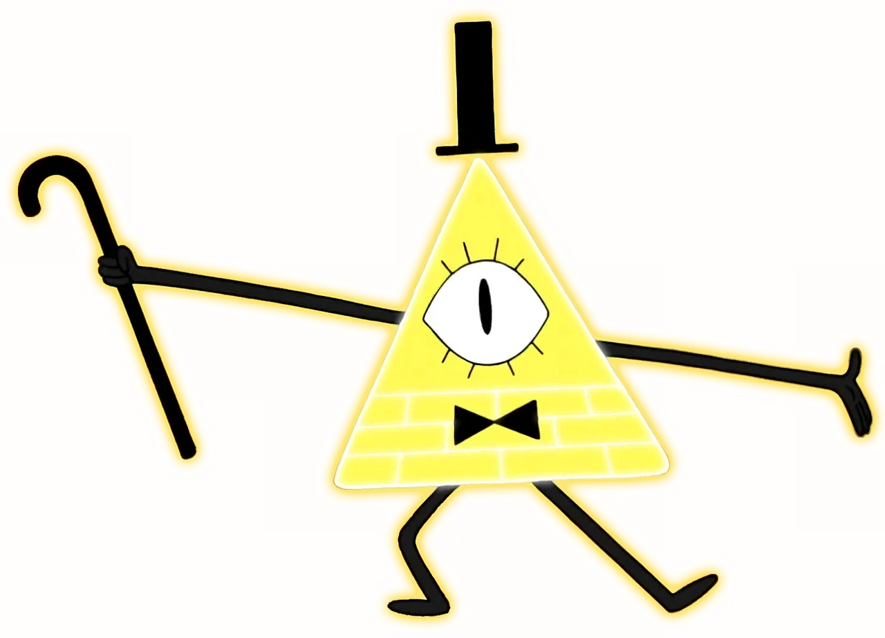
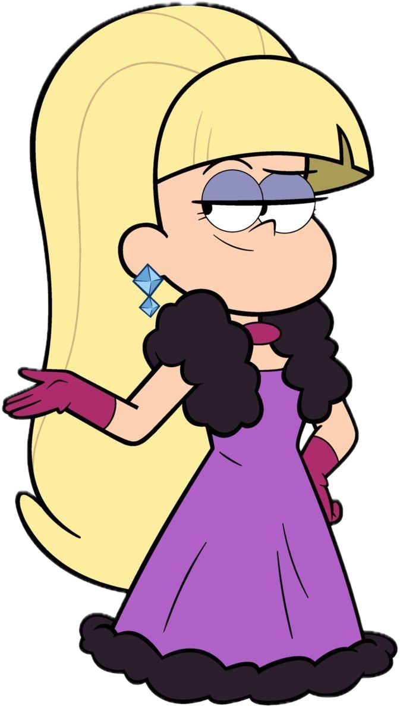

Dipper Pines
The inquisitive and brave twin brother of Mabel.
Read More
Dipper Pines is one of the protagonists of the series. He is determined to uncover the mysteries of Gravity Falls and often finds himself in dangerous and supernatural situations. His curiosity and bravery drive much of the show's plot.

Mabel Pines
The creative and optimistic twin sister of Dipper.
Read More
Mabel Pines is known for her cheerful personality and creative flair. She is Dipper's twin sister and often brings a light-hearted perspective to their adventures. Her creativity and optimism balance Dipper's more serious approach.

Soos
The lovable and goofy handyman at the Mystery Shack.
Read More
Soos is the friendly and quirky handyman of the Mystery Shack. His easy-going personality and love for odd jobs make him a favorite character. He often provides comic relief and unexpected wisdom throughout the series.

Wendy Corduroy
The laid-back teenage employee of the Mystery Shack.
Read More
Wendy Corduroy is a teenage employee at the Mystery Shack who is known for her relaxed demeanor and independence. She often acts as a mentor to Dipper and Mabel and provides a sense of grounded realism amidst the chaos of Gravity Falls.

Bill Cipher
The enigmatic and malevolent demon with a thirst for chaos.
Read More
Bill Cipher is the main antagonist of the series. As a powerful and enigmatic demon, he seeks to bring chaos and destruction to Gravity Falls. His complex personality and grand schemes make him a formidable foe for the Pines family.

Pacifica Northwest
A wealthy and popular girl who initially seems like an antagonist.
Read More
Pacifica is part of a wealthy family and initially comes off as arrogant and mean-spirited. Over time, she shows a more complex side and even becomes an ally to Dipper and Mabel.

Stanford Pines
The intelligent and mysterious brother of Grunkle Stan.
Read More
Stanford Pines, also known as Ford, is Grunkle Stan's twin brother. He is a brilliant scientist and has a deep understanding of the supernatural events in Gravity Falls. His return to the series brings new challenges and revelations.

Stanley Pines
The original owner of the Mystery Shack and Grunkle Stan's twin brother.
Read More
Stanley Pines is also known as Stan the Man and is the original owner of the Mystery Shack. His past is shrouded in mystery, and his complicated relationship with his twin brother, Ford, adds depth to the story.